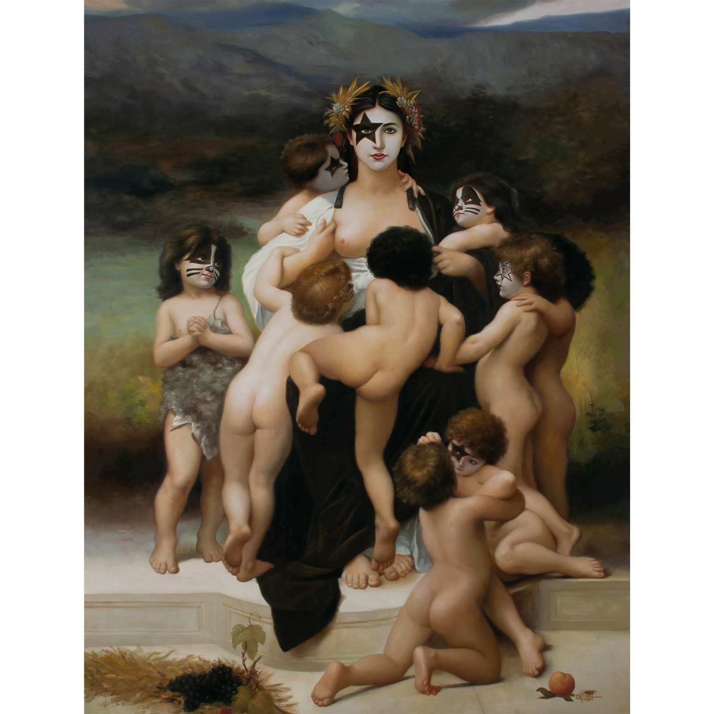
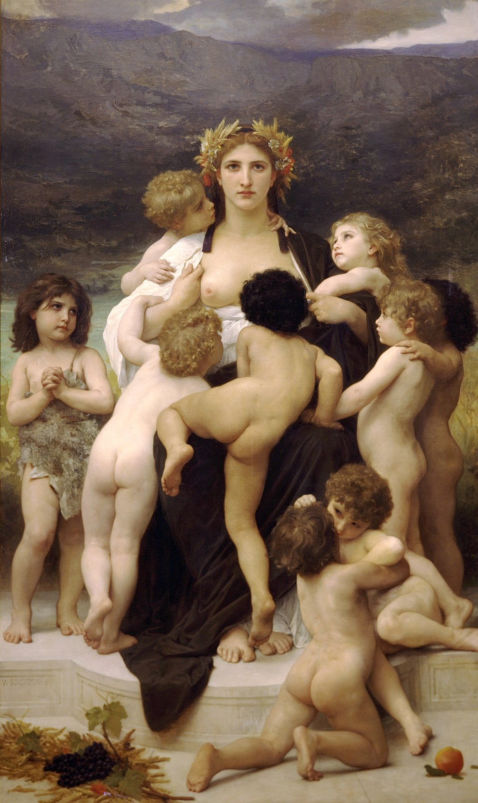

Literature
Ron English, Fauxlosophy: The Art of Ron English (San Francisco: Last Gasp, 2016), p. 180. ISBN 978-0867196566.
Notes
This work references William-Adolphe Bouguereau’s The Motherland.
Ancillary Documentation


Ron English, Fauxlosophy: The Art of Ron English (San Francisco: Last Gasp, 2016), p. 180. ISBN 978-0867196566.
This work references William-Adolphe Bouguereau’s The Motherland.
